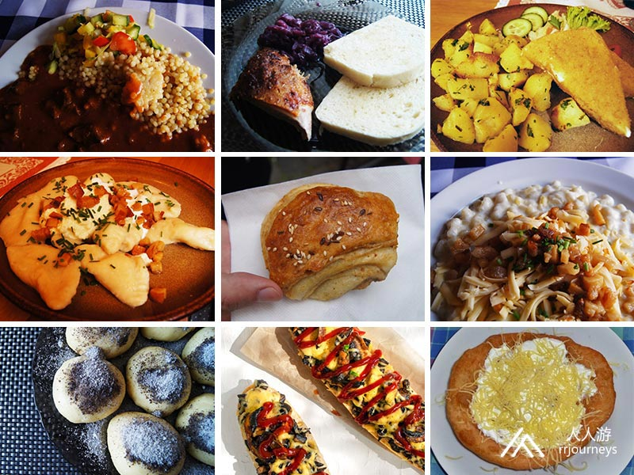
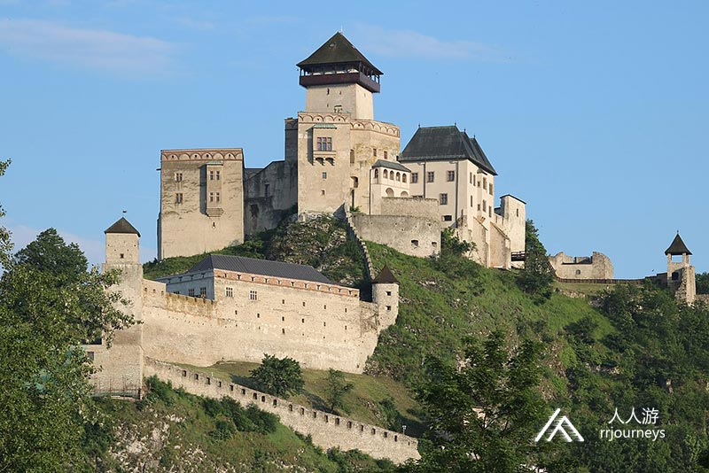
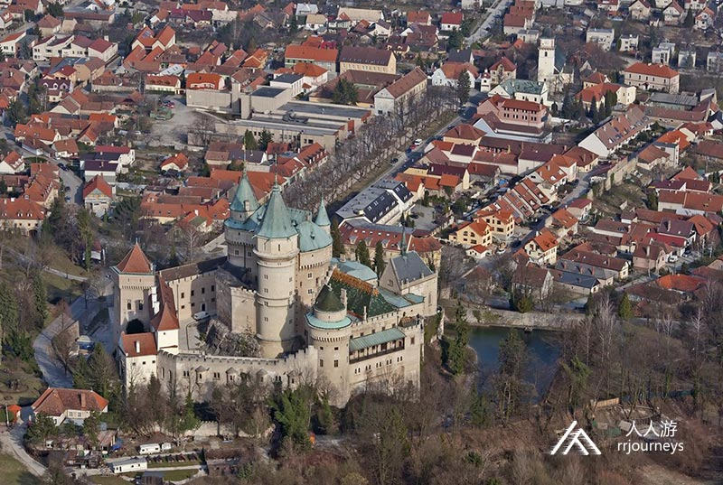
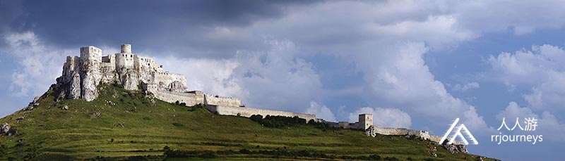

特色旅游
1日游
2-4日游
5-10日游
精品长线旅游
地址：匈牙利 布达佩斯 Budapest-Keleti, 1087
电话：0036-30-9574162
邮件：rrjourneys@gmail.com
网站：http://www.rrjourneys.com

行程路线：
具体行程：
DAY1：布达佩斯-尼特拉-恰赫季采-特伦钦
入住地点：特伦钦
参加成员请按通知的时间及地点集合，一同从布达佩斯出发，前往尼特拉。
尼特拉
尼特拉是斯洛伐克西部的一座城市，位于尼特拉河谷佐伯山脚下。人口约78,353，是斯洛伐克的第五大城市。尼特拉也是斯洛伐克最古老的城市之一。 尼特拉的古迹可追溯到大约25,000-30,000年前。在过去的5,000-7,000年的所有历史时期中，一直有人居住。欧洲的几种考古文化和群体都是以尼特拉文化而命名。大约公元前1600年，城堡山上建立了第一个防御工事。在铁器时代佐伯山上建了一座大型山丘城堡。公元前700-500年卢普卡山和德拉佐夫塞建了一些较小的山丘城堡。从1世纪到5世纪，凯尔特人铸造了银币。罗马时期（公元1至4世纪），公元396年魁北克日耳曼部落在该地区定居并定为首都。
景点：尼特拉城堡
尼特拉城堡位于老城区，是国家文化古迹的象征。它是这座城市的主导者，也是尼特拉教区的所在地。 城堡山上的第一个防御工事可追溯到青铜时代。在公元前1世纪，山丘由凯尔特人定居，直到斯拉夫时代初期7至8世纪。9世纪，斯拉夫人建造了一座巨大的城墙，最初的城墙在11世纪初期被摧毁。同期建了这座城堡。城堡的核心是带有主教官邸的圣埃默拉姆大教堂。大教堂的其他两个部分是14世纪的哥特式上教堂和17世纪的下教堂。几个世纪以来的许多改建，设防和重建工作，完全改变了城堡的原始外观。最接近原始外观的是13世纪上半叶的圣埃梅拉姆大教堂。
恰赫季采
恰赫季采是斯洛伐克西部一个村庄，人口为4,000。该村位于丹努比低地和小喀尔巴阡山脉之间。它以伊丽莎白·巴托里的故居和附近的恰赫季采城堡的废墟而闻名。
景点：恰赫季采城堡
恰赫季采城堡是斯洛伐克的城堡废墟，坐落在拥有稀有植物的小山上。因此小山被宣布为国家级自然保护区。城堡本是一座罗马式城堡，带有一个有趣的马蹄形居住塔楼。后来变成了哥特式城堡。17世纪城堡又增添了文艺复兴时期的装饰。现在城堡遗址被多家电影公司作为拍摄地。 1981年被用于拍摄捷克斯洛伐克喜剧《喀尔巴阡山脉的神秘城堡》,美国广播公司（ABC）的家庭节目《地球上最恐怖的地方》的“血腥伯爵夫人城堡”剧集SyFy频道系列的《捉鬼敢死队国际》《折磨的灵魂》。
1560年出生于匈牙利的伯爵夫人巴斯里伊丽莎白被吉尼斯世界纪录称为“史上杀人最多的女性凶手”。据说她谋杀了多达600名年轻的女孩仆人，以便在她们的血液中沐浴，以保持她的皮肤鲜嫩柔软和年轻。巴斯里伊丽莎白受过良好的教育，富有的家庭背景。1601年至1611年间，巴斯里伊丽莎白被指控以雇佣为借口引诱年轻的农民女孩。她们大多都会遭到殴打，烧伤，折磨和谋杀。并且有人说她曾经参与过食人族的活动。伯爵夫人被囚禁在这座城堡的高塔内直至去世。
DAY2：特伦钦-博伊尼采-奥拉瓦城堡-斯皮什城堡-科希策
入住地点：科希策
特伦钦
特伦钦在斯洛伐克中部的瓦赫河流域靠近捷克边境，距离布拉迪斯拉发约120公里。它的人口超过55,000，是该国的第八大直辖市。自远古以来，特伦钦的遗址就有人居住。特伦钦是7世纪萨摩帝国首都。斯洛伐克最受欢迎的音乐节自1997年以来一直在特伦钦举办。自2004年起，它在特伦钦机场举行。

景点：特伦钦城堡 特伦钦城堡是斯洛伐克的第三大城堡。城堡分为上下两部分，并设有防御工事。上层城堡有数座宫殿建筑，围绕着中世纪的中心塔楼。这座塔楼是城市的最高点。在城堡下方的山坡上，是一座古老的教区教堂和一个较小的广场，可通过蜿蜒的小巷到达。老城区有大型的主广场，巴洛克式教堂还有一个城楼组成。城堡的历史可以追溯到罗马帝国时代， 最古老的建筑是圆形的石头建成。这个城堡的主人一直统治着这一区域。 下部城堡的区域内可以找到水井，也被称为“爱之井”。据传说是土耳其王子奥马尔在岩石上挖的，以表达他对美丽的法蒂玛的爱意。实际上该井是在16世纪由驻军挖出的，深约80m。
博伊尼采
博伊尼采是中部的一个历史名镇，它的人口约为5,000。该镇有着斯洛伐克最古老的动物园，城堡以及古老的温泉。这座城堡曾出现在许多国际电影中，每年都会举行一个著名的国际电影节。该镇的历史与城堡的历史息息相关。当时此地也只是城堡下的一个居住点。自1366年以来便享有城镇特权。

景点：博伊尼采城堡
博伊尼采城堡是一个中世纪城堡。这是一座罗马式城堡，建于12世纪，有着原始的哥特式和文艺复兴时期的元素。它用奇特不平的岩石的外形取代木制堡垒。 随着城堡的更新换代，它也验证了历史的变迁。1528年匈牙利王国北部最富有的家族收购了城堡，并把堡垒变成了文艺复兴时期的城堡。1945年后捷克斯洛伐克政府没收了这座城堡，并改为国家机构的办公地点。
博伊尼采城堡是斯洛伐克访问量最大的景点之一，吸引了大约20万名游客，像童话城堡，国际鬼魂节和夏季音乐节。浪漫的城堡也是拍摄童话电影的热门地点。
奥拉瓦城堡
奥拉瓦城堡被认为是斯洛伐克最美丽的城堡之一。这座城堡建于十三世纪，被称为“城堡悬崖”，高112米。一座木制城墙成为坚固的围墙城堡，它是为防御蒙古人入侵匈牙利而建造，是罗马式和哥特式风格，后来被重建为文艺复兴时期和新哥特式风格。这样美丽的城堡，欧元亦相中了它。
斯皮什城堡
斯皮什城堡是斯洛伐克东部最大的一个城堡。面积41,426平方米，也是欧洲最大的城堡之一。城堡建于12世纪，是一座防御工事的罗马式石制城堡。13世纪下半叶，城堡里修建了一座两层的罗马式宫殿和一间三层的罗马式哥特式的大教堂。城堡面积也翻了一番。1993年它被列入联合国教科文组织世界遗产。

DAY3：科希策-布达佩斯
返回布达佩斯
科希策
科希策是斯洛伐克第二大城市。早在1290年科希策就有了城镇特权。它之所以繁盛 ，是和它的国际贸易路线上的战略要地分不开的。同时它作为匈牙利的免费皇室镇，与首都布达享有同等的权利。1369年，匈牙利的路易斯一世赐予了科希策自己的徽章。路易斯一世在卡萨召集的国会议会上，决定女性可以继承匈牙利王位。科希策拥有大约24万人口。该市有保存完好的历史资料，是斯洛伐克城镇中最大的历史中心，哥特式，文艺复兴，巴洛克和新艺术风格的建筑在该市也是到处可见。科希策是斯洛伐克重要的工业中心，美国钢铁科希策钢铁厂是该市最大的雇主。2013年，科希策与法国马赛一起成为欧洲文化之都。
景点：圣伊丽莎白大教堂
圣伊丽莎白大教堂是哥特式的大教堂，长60米，宽36米，北塔的高度为59米，中央教堂中殿长24 m，过道长12 m，总面积为1,200平方米，可容5000人。它是斯洛伐克最大的教堂，也是欧洲东部的哥特式风格的大教堂之一。它是中欧中世纪石雕艺术品的顶峰。大教堂和毗邻建筑物的建筑群–圣迈克尔教堂和城市塔楼在1970年被宣布为文化遗产。
景点：国家大剧院
科希策国家剧院是一家古典剧院，建于前中世纪的市政厅所在地。该建筑始建于古典主义，主舞台是一个历史悠久的新艺术风格的建筑。当前的剧院大楼于1899 年9月28 日开幕，具有折衷主义的新巴洛克风格。该建筑物最初是在匈牙利使用的。1946年，剧院被称为科希策的国家剧院，并于1955年更名为国家剧院。1998年，剧院重获独立，并改回科希策国家大剧院的名称。
6天5夜乌克兰小众深度游
7天6夜克罗地亚、波黑小众
5天4夜波兰、斯洛伐克小众
四天三夜奥地利、斯洛文尼亚
匈牙利最大的滑雪场一日游
6天5夜，奥地利滑雪自由行
7天6夜，奥地利旅游滑雪自
4天3夜，奥地利滑雪自由行
Copyright 2020 www.rrjourneys.com
人人游 旅游官方网站 版权所有 All Rights Reserved